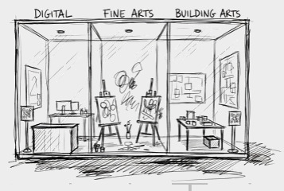
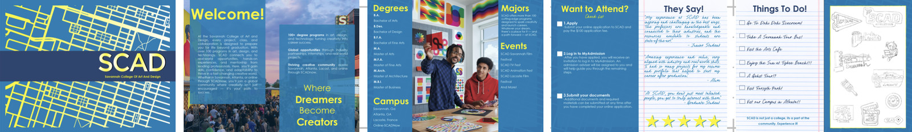
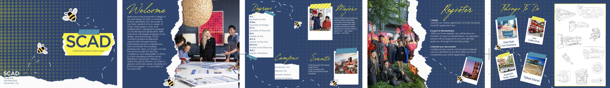
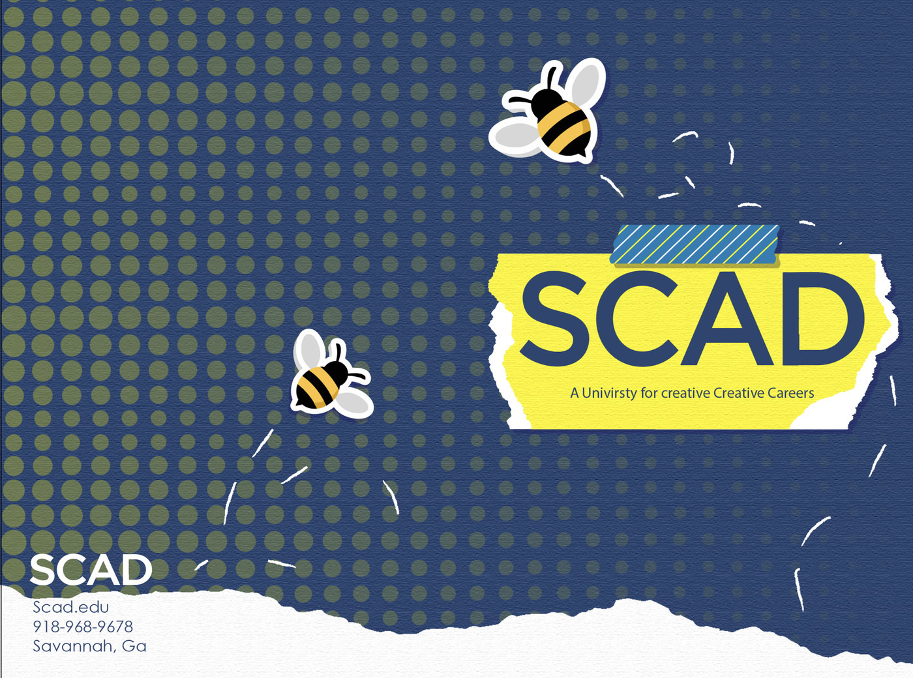
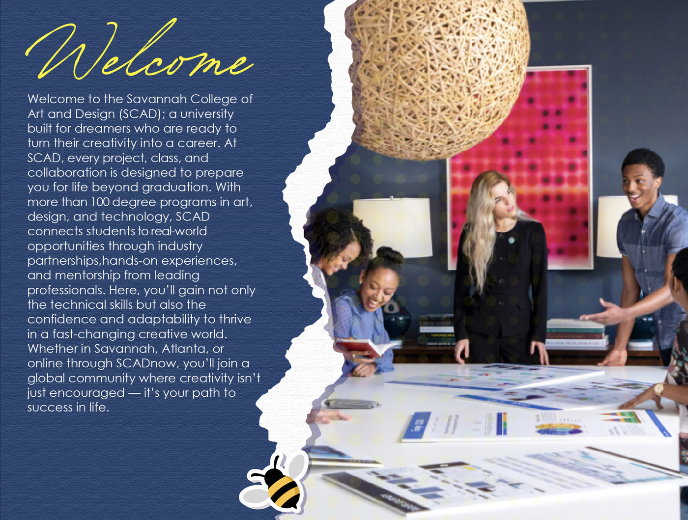
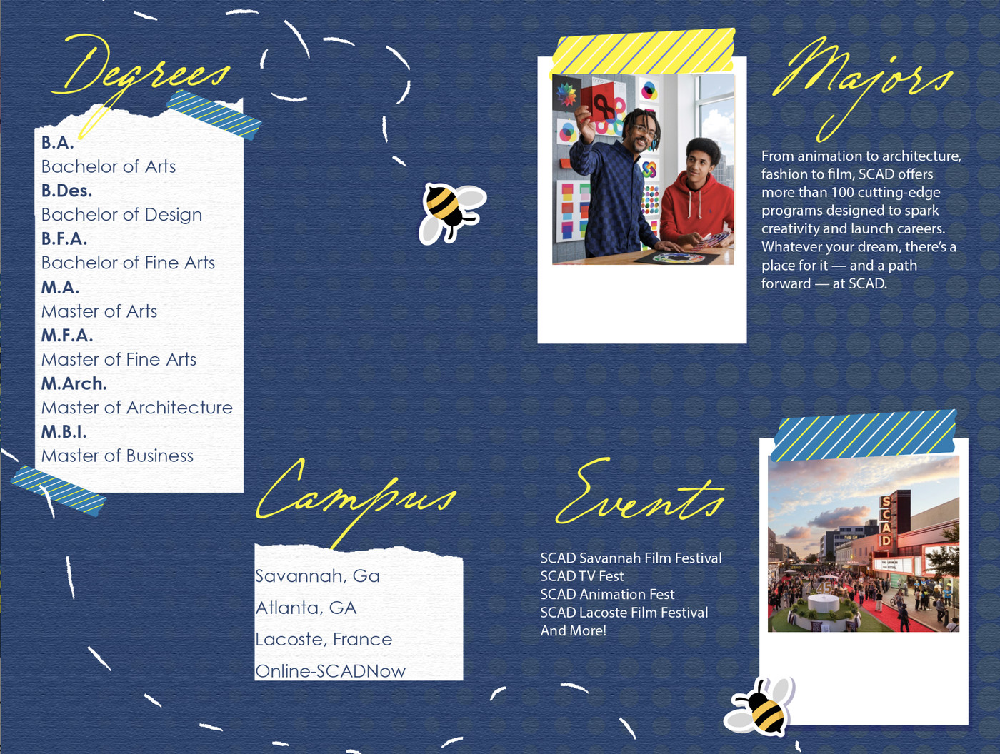
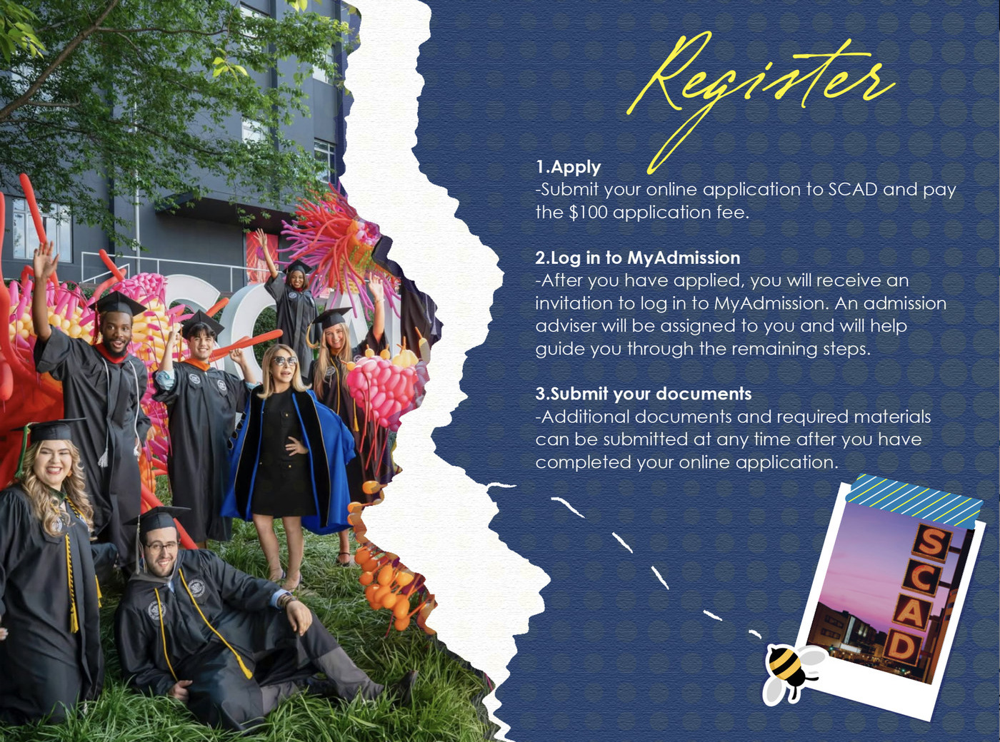
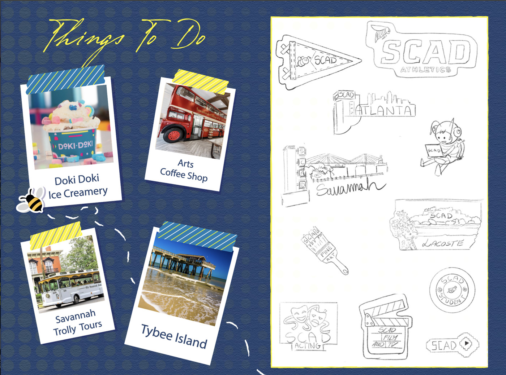
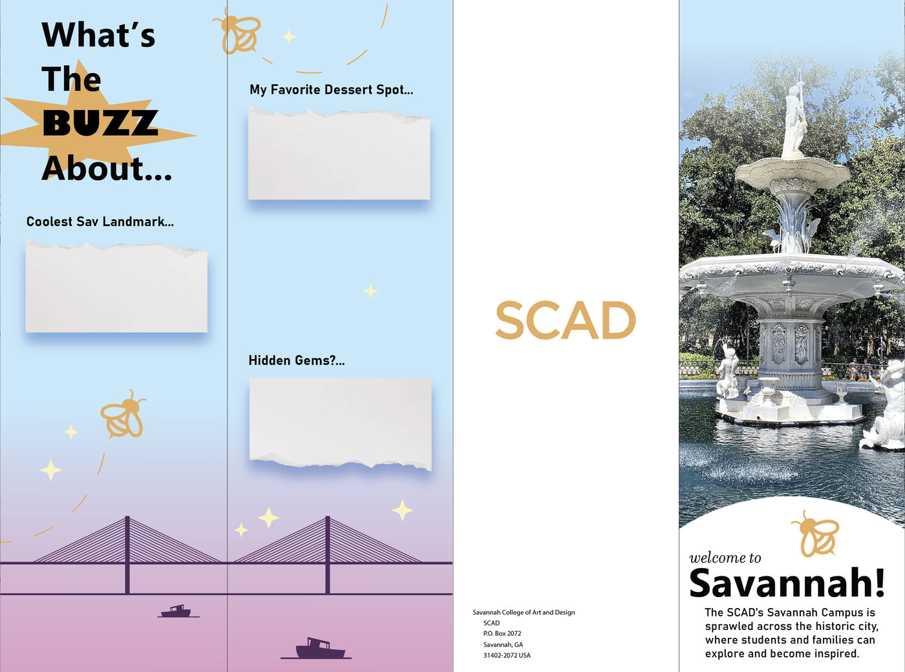
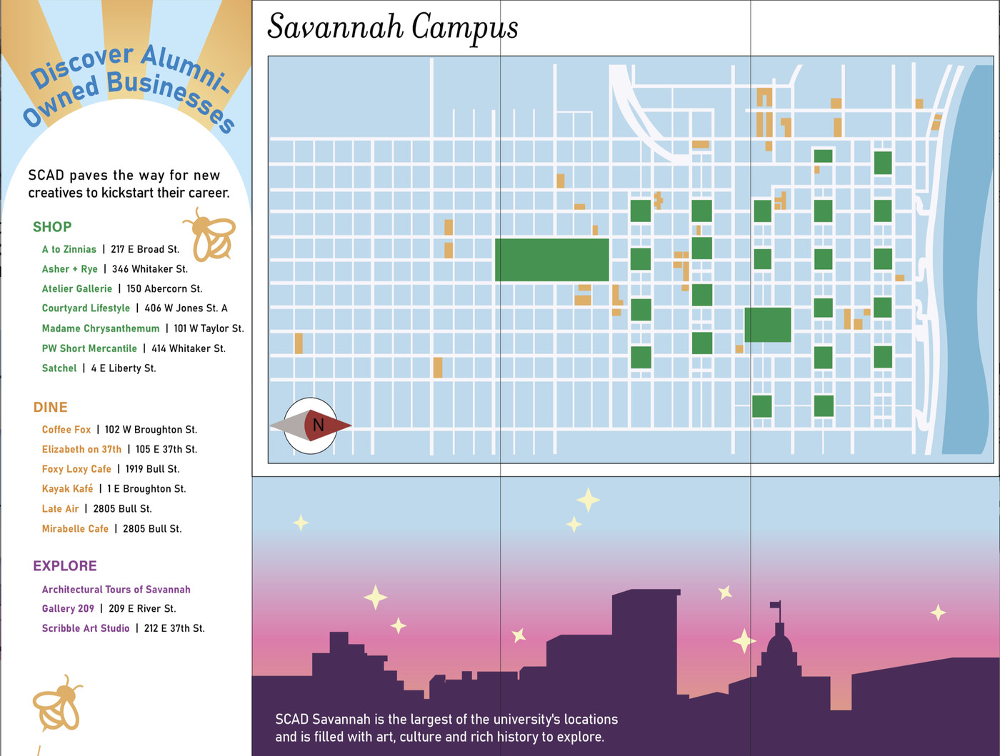

SCAD Admissions
The Pop-Up Campus

Grow enrolment by rethinking how SCAD is presented to prospective students, and reach the ones who are nowhere near Georgia.
Domestic recruiting has a fallback: get them on campus and the campus does the selling. International recruiting has no such thing. A student in Seoul or Lisbon meets the school entirely through a brochure, and every art school’s brochure makes the same promise in the same words.
Stop describing the campus. Ship one.
An art school is the one product that can demonstrate itself. You cannot hand someone a chemistry department, but you can hand them a brush, a workstation and a model-making table and let the thing argue its own case. The pop-up turns the admissions message into something a student does rather than reads.
The pop-up
Three glass bays under one frontage, each holding a discipline the school is known for: Digital, Fine Arts, Building Arts. Easels and wet canvases in the middle, workstations on one side, a model shop on the other, and a QR plinth at the door so the walk-in becomes an application.

The tour
Built as one unit and routed, rather than built seven times. We costed it and drew the route it would take: four US markets, then the three cities where the international argument actually has to be won.
The pamphlet, two ways
The piece that travels home with them, in print and digital: majors, how to apply, campus events, local culture. We took it down two routes rather than one. Clean and structured for clarity, playful and expressive for warmth. Both went in front of the client. The same information, two different arguments about what kind of place the school is.


Version two is the one I would send. It behaves like something a student already at the school made and posted, which is the impression the brochure is trying to buy.





The city
Nobody moves to a school, they move to a city. So the last piece is a guide to Savannah past the tour bus: shops, cafés, restaurants and the places you only find by living there, mapped against the businesses SCAD alumni went on to open. That is the argument about outcomes, made without making it.


Presented to SCAD Admissions and university leadership. The part I would defend hardest is the costing: a pop-up is an easy thing to pitch and a hard thing to approve, and the route sheet is what moves it from an idea to a line someone can sign.